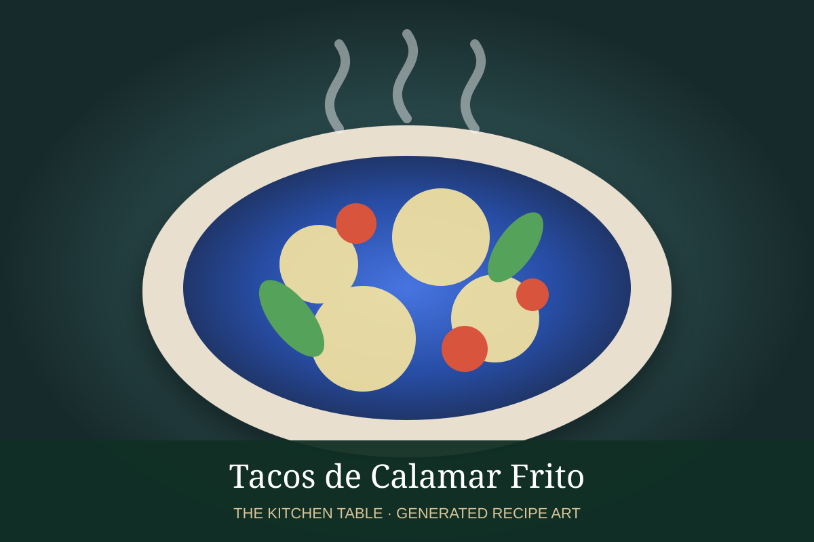

← Back to all recipes
SEAFOOD · MEXICAN
Tacos de Calamar Frito
Crisp fried calamari tucked into tortillas with cabbage, lime crema, and chile salsa.
35 minMakes 10 tacos

Photo: Serious Eats
Ingredients
- 1 1/2 lb squid rings
- 1 cup buttermilk
- 1 cup flour
- 1/2 cup cornstarch
- Paprika
- Salt
- Oil
- 10 tortillas
- Cabbage
- Lime crema
- Salsa de chile de árbol
Preparation
- Soak squid in buttermilk.
- Mix flour, cornstarch, paprika, and salt.
- Dredge squid.
- Fry at 350°F until crisp.
- Serve in tortillas with cabbage, crema, and salsa.